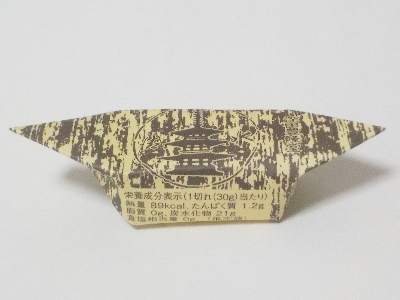
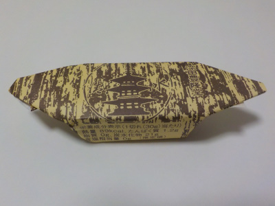

深田豊隆堂の羊羹
2021/06/12

柔らかくて甘い羊羹でした。ちょっと軽めかな。
暖かい時期は濃いものより軽い方がいいかなと思いました。
島根県安来市清水町138
2021/06/12

柔らかくて甘い羊羹でした。ちょっと軽めかな。
暖かい時期は濃いものより軽い方がいいかなと思いました。
22021/06/12

なんとなく舟っぽい形ですけど、舟じゃないんだろうな。（たぶん）
安来の道の駅で買った清水羊羹です。
やわらかめで小豆の味がよくわかりました。ちょっと夏菓子っぽいかな。
アルミパック入りで、簡単に開けて手を汚さずに食べれました。気軽に食べれる一口羊羹ですね。